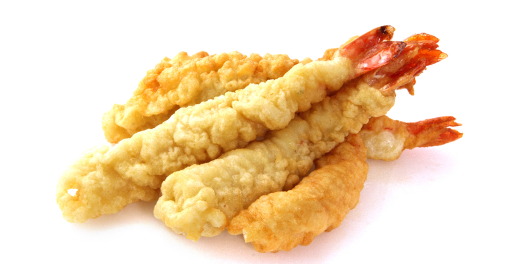

TEMPURA DE LANGOSTINOS
Tempura - Langostinos apanados en Panko y fritos

Tempura - Langostinos apanados en Panko y fritos
Omuraisu - Tortilla de huevo rellena de arroz frito
Ramen - Sopa de Fideos de harina de trigo con Caldo

Karaage - Pollo frito estilo japonés con verduras
Gyozas - Empanadas de cerdo al vapor

KATSUDON - Milanesa de cerdo con arroz y huevo revuelto
Sushi - Arroz avinagrado con palta, salmón y queso
Okonomiyaki - Tortilla de papas japonesa con verduras y cerdo
Mochi - Pastel japonés de arroz con centro de anko
Fuwa Fuwa - Torta cheesecake japonesa